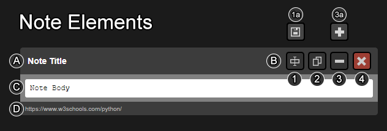

*As of this version, will add this functionality soon.
How to Use Notes
Notes can be viewed by clicking the extension icon in your browser.
If you have any notes, you will see them below.

Note Title: The title of the note.
Note Buttons: Use these to manipulate the note.
Change Text: Used to change the title / note body text. When clicked, the icon will change to Save and the editable areas will recieve a black background.
Save: Save the text that is in the title and body sections.
Copy: Copy the note body text to the system clipboard. ( To paste it somewhere else )
Collapse: Collapse the note body. Will change the icon to the expand icon when clicked.
Expand: Expand the note body. Will change to collapse icon when clicked.
Dismiss: Delete this note.
Note Body: This is the text you added.
URL: This is the URL of the page that you used to add the note. You can click this to go back to the page.
Tools
Tools Menu (the other tab in this panel)
These are actions you can perform on all the notes:
Delete All: Delete all your notes.
Collapse All: Expand all notes - same as clicking "Expand" button on all notes.
Expand All: Collapse all notes - same as clicking "Collapse" button on all notes.